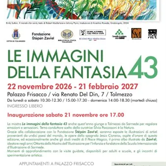

da dom 22 nov a dom 21 feb
Le Immagini della Fantasia 43
La mostra Le immagini della fantasia 43 anche quest’anno giunge a Tolmezzo da Sarmede per regalare emozioni e sensazioni. Grazie alla collaborazione con la Fondazione Štěpán Zavřel, sono esposte le illustrazioni di artisti provenienti da undici paesi del mondo, le opere dello…
 Indicazioni
Indicazioni
- Costi e prenotazioni
- Costo non indicato · Prenotazione non indicata
- Programma
- Programma da verificare. Apri la fonte ufficiale per orari e possibili aggiornamenti.
- In caso di maltempo
- Nessuna indicazione specifica pubblicata.
- Note
- Acquisito automaticamente dalla fonte.
L’EVENTO
Descrizione completa
La mostra Le immagini della fantasia 43 anche quest’anno giunge a Tolmezzo da Sarmede per regalare emozioni e sensazioni. Grazie alla collaborazione con la Fondazione Štěpán Zavřel, sono esposte le illustrazioni di artisti provenienti da undici paesi del mondo, le opere dello spagnolo Jesús Cisneros, ospite d’onore di questa edizione, ed eccezionalmente anche gli studi inediti di “Il Pesce Magico”, il primo albo illustrato da Zavřel, ideatore negli anni Ottanta della Mostra dell’Illustrazione per l’Infanzia e fondatore della Scuola Internazionale d’Illustrazione di Sarmede.
L’ inaugurazione della mostra è prevista sabato 21 novembre alle ore 17.00 , sarà visitabile fino al 21 febbraio 2027 con orario dal lunedì a sabato: 10.30-12.30/15.00-17.30, la domenica 14.00-18.30 (martedì chiuso). Il tema conduttore scelto dalla curatrice Silvia Pacassoni è la Natura, declinata il quattro sezioni - Speranza, Infanzia, Arte, Scienza – ma progettata come una narrazione continua. L’esposizione si snoda nelle sale dei due piani di Palazzo Frisacco in un susseguirsi di espressioni artistiche diverse che affrontano la stessa radice tematica. Le opere delle sezioni Natura e Arte - con Anna Benotto, Dinara Mirtalipova e Chen Wang - e Natura e Scienza - con Rossana Bossù, Manon Gauthier ed Eric Puybaret – sintetizzano il potere della Natura come fonte di ispirazione che genera espressioni artistiche e come espressione di bellezza che diventa conoscenza. Nella Sezione Infanzia – con Francesca Ballarini e Emma Giuliani - il legame con la Natura si manifesta nei giardini e negli orti all’interno delle fiabe. Il senso di una natura positiva emerge dalle opere della sezione Natura e Speranza – con Joanna Concejo, Anne Crausaz, Marc Martin, Eric Puybaret e Emily Sutton. L’ospite d’onore dell’anno è Jesus Cisneros, artista spagnolo che si distingue per l’attenzione al tema della natura che presta nelle sue opere e anche nei workshop che conduce in molti Paesi. Impegnato nell’ambito letterario tra poesia sacra e narrativa contemporanea in questo caso si misura con i classici reinterpretando tra gli altri The Tempest” di William Shakespeare e “The Alchemist” di Paulo Coelho. Non poteva mancare il tratto di Štěpan Zavřel, fondatore della Scuola di Illustrazione e della mostra di Sarmede. L’occasione è imperdibile: ammirare i diciotto disegni preparatori del primo albo illustrato “Il Pesce Magico” progettato insieme al Mafra Gagliardi nel 1964 e pubblicato nel 1966 in tedesco. Nel periodo di apertura dell’esposizione sono previsti momenti di approfondimento: visite guidate per gruppi, visite guidate gratuite per ospiti di case di riposto, centri diurni, anziani e persone con disabilità, incontri di sperimentazione artistica che arricchiranno l’esperienza di visita (informazioni e prenotazioni a Palazzo Frisacco tel. 043341247 – e-mail: candonifrisacco@gmail.com ). Visite guidate in presenza o virtuali per le scuole di ogni ordine e grado sono proposte nell’ambito di CarniaMusei (informazioni e prenotazioni a CarniaMusei tel. 0433487704/79 – e-mail: info@carniamusei.org ). La mostra è organizzata dalla Città di Tolmezzo con la Fondazione Štěpán Zavřel, con il sostegno della Regione Autonoma Friuli Venezia Giulia, con la collaborazione di Biblioteca Civica Tolmezzo, Comunità di montagna della Carnia, CarniaMusei, Società Cooperativa Arte Venti.
IL PROGRAMMA
Programma e orari
Appuntamenti raccolti dalle fonti elencate. Dove manca un orario, non è ancora disponibile in questa scheda.
Programma pubblicato
- Dal 2026-11-22 al 2027-02-21
INFORMAZIONI UTILI
Prima di partire
- Controllare la fonte prima di partire.
ORGANIZZAZIONE